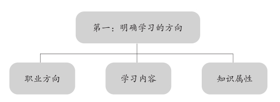
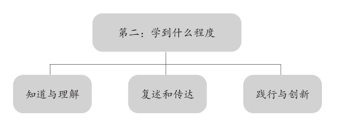
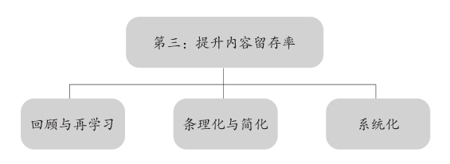

第十八章
“内容留存率”决定了我们学习的效能
我们知道，生活中很多的事情均可以外包，但唯有“学习”是不能外包的。学习纯粹是你自己的任务，没人能替你操刀。学习也是我们立足于这个世界的最重要的一项底层能力。只要有强大的学习能力，一个身无分文的人也有机会成为世界首富。但如果你的学习效能很低，就是给你亿万的财富，也只能坐吃山空。
想提高学习的效能，就要提升自己学习的“内容留存率”。只有当学习的“内容留存率”达到90%以上，才能算是真正的高质量的学习。费曼认为，在回顾和反思的环节中，一件非常重要的事就是把我们学习的“内容留存率”提升上去。
什么是“内容留存率”？首先，是我们记住知识的比例，也就是能把多少所学的知识转化为长时记忆；其次，是能真正理解到的知识的比例，即能实质地掌握多少内容；最后，是这个比例不低于90%才可称得上高效能的学习。
比如读一本书，我们的大脑最喜欢的阅读方式是什么？一定是先找个舒服的地方，比如靠在软软的沙发上，吹着空调，喝着咖啡，听着音乐，然后由着性子挑感兴趣的内容。至于能记住多少，大脑并不关心这个问题，它重点关注的是阅读体验。大脑在学习这方面始终是一个追求安逸的偷懒分子。
我记得几年前自己想了解科普方面的知识时，买了很多书，抽出时间专门阅读，就是以这种缺乏自律的形式完成了整个学习的过程。有时碰到了很有吸引力的内容，大脑便能清晰地记下它们；但如果全篇的内容都很枯燥，读完没多久我就失去印象了。到需要我讲述给别人听时，我发现自己想不起来多少东西，学过的内容能记住的很少。
我们有超过90%的学习都是这种既耗费时光又成果乏善可陈的行为。与此同时，今天的时代又飞速进化，旧的知识正不断地被新的技术覆盖和吞噬，经济和就业环境恶化，人们迫切需要从新知识中获取新的竞争力，便一定产生愈发强烈的“学习焦虑”。越焦虑，学习就越容易四处撒网，分散精力，每一类知识都浅尝辄止，学不精，也记不多，效能越来越差。
学习焦虑与知识的悖论——焦虑让人紧张，却不能解决问题。当你对学习的焦虑感上升时，你吸收知识的效率就会下降。即，你越想学好，结果就越学不好。
学习最重要的是保证效能——无论对学习付出了多么海量的时间，投入了多么巨大的资源，这都不是最重要的。最重要的是学习的效能。即，投入的时间和资源的产出比。要看你记住了多少知识，理解了多少内容，并且把它们在实际的生活和工作中融会贯通。
遗憾的是，根据我与国内一线城市的十几家教育机构联合做的调查研究发现，人们美好的愿望总是与现实有着遥远的距离，这个规律应验于生活和工作中的方方面面。我们想得很好，规划得也不错，真做起来却发现不是那么回事。学习也是如此。尽管随着互联网和知识在线分享平台的普及，学习的机会和方式日益丰富，却并没有从根本上改变我们获取知识的效能。学习仍然很不容易，想获得真正的知识也依然艰难。
费曼曾十分幽默地评价这种现象：“好比一条从鱼缸放出来的鱼却在大海里无穷无尽的食物之中饿死。可见简单的事情真做起来也不易，就像我们要把一个最普通的物理知识介绍给小学生一样，我们都知道苹果从树上掉下来是因为地心引力，可为什么无法让他理解这个原理呢？”
不是学得越多效能就越高
在学习和学习的行为之间，我们之所以存在沟壑，主要原因便是不知如何去增大“内容留存率”。有个学生向我诉苦说，有时觉得时间紧迫，任务繁重，太多的书要看，题要做，心态就急躁，行为就变得盲目，于是便忘了预先制订的学习计划。他花几天的时间钻研几万字的资料，废寝忘食，可能只理解了三五千字的内容。这项工作重复下去，实在没什么价值，心灰意冷之下他就放弃了对这门知识的学习。这让他的成绩很差，对未来感到悲观。
这种现象反映了五个方面的问题：
第一是在选择知识上的心态浮躁。
人们在学习时一方面希望获得有深度、有营养的干货，另一方面又总希望这些知识通俗易懂，一看就会，到手即用。所以选择知识时心态浮躁，总想一口吃成胖子，快速成功，静不下心来专注地理解自己的学习对象。
第二是在学习过程中的行为盲目。
学习的过程中人云亦云，临时起意，看到别人的推荐或大家都在学的东西，立刻放弃自己正在进行的计划，也跑去学那些内容。这种盲目还体现在，自己并没有一个明确、坚定的学习目标，也不知道自己究竟需要哪些方面的知识。
第三是不善于学习管理。
制订了学习计划却不能严格地执行，比如下定决心读一本书，安排了周末的时间，到时候又被朋友叫出去打球了；热衷于报名参加学习课程，又不能准时听课，上完课也做不到及时温习，导致学习管理一塌糊涂，虽然对学习付出了极多，实际上却学不到多少有用的知识。
第四是没有自己的知识体系。
缺乏知识体系在学习中最直观的表现是不知道为什么要学习这些知识，也不清楚学了这些东西对自己有何作用，更不懂如何从中吸收对自己有益的内容，用于解决实际问题。这就使学习变成了一种劳而无功之举。虽然你总在学习那些热门或时髦的知识，却很难消化它们。
第五是不看重学习方法。
尤其不重视获取正确高效的学习方法。很多人对学习充满热情，恨不得一夜间便成为某个领域的专家，但却用蛮力去学，比如死记硬背，不知道应该如何确定自己的学习方向，怎样高效地留存学到的高质量的内容。所以这种热情到最后总会被现实当头浇一盆冷水，学不出效果。
费曼说：“知识不仅是文明的记忆，也不仅是未来的旗帜，它还是一种思维结构。当你从思维结构的角度看待知识时，就要意识到，学习的过程其实就是对我们自己思维的变革，它有聪明的方式，也有愚蠢的方式。”
我们即使从书本或知识平台中了解、阅读到了全部的内容，哪怕倒背如流，那也只是完成了学习的不足5%的份额，也仅是达到了费曼要求的入门级别，更艰巨和更漫长的任务还在后面。因为学习最重要的是最大限度地记住“有用的知识”，这些知识要深刻于脑海，对之如臂使指，成为一技之长。所以，别一味地追求学习的数量，要着眼于学习的质量，提高学习的效能。

第一步要针对自己的职业/工作方向、学习的内容和知识的属性，把要学习的知识规划清晰，包括概念性知识、事实性知识、过程性知识、原理性知识等。即，解决学习什么的问题。在这一步中，记得及时地把不适合、不感兴趣的内容挑出来，因为它们会影响理解和记忆的效能。

在第二步的三个层次中，第一个层次是知道与理解，表现为能够正确地理解知识的含义；第二个层次是复述和传达，表现为能够正确地复述一遍并且讲给别人听；第三个层次是践行和创新，表现为能够将知识转化为行动，然后创造新的知识。这三个层次缺一不可。

第三步是费曼学习法的核心，大致可以分为以下三个层次。第一个层次，即本章讲到的回顾和反思的步骤，经过现实的践行与创新，通过必要的回顾与反思，对知识进行再学习；第二个层次，将知识条理化，以自己喜欢和熟悉的方式简化，利于记忆和运用；第三个层次，将学到的知识整合到自己的知识系统中，或者产生新的知识系统。费曼和美国国家训练实验室的研究表明，这几个步骤成功地运用下来，可以帮助我们将学习的内容留存率提升到90%以上。
重复“有用的学习”
什么是“有用的学习”？这个问题关系到我们对于学习的认知。首先举个常见的例子，我们从一些付费平台上学习所得到的东西，算不算是有用的知识呢？这已经是在线学习的一部分，是今天正在流行的风潮。我无意打击读者为知识付费的积极性，但我的建议是，既然为此付出了金钱，就要做好对知识的甄别。
如何甄别出那些有用的知识？一个简单易行的办法就是将知识划分成三种，根据类型的不同采取对应的学习策略。
第一，对具有生长能力的知识重点学习。
这种知识是能帮助我们干大事的，对我们的生活和事业甚至具有无可替代的决定性，比如与工作相关的专业知识、新的理论、关乎知识源头的问题、概念、定理和应用等，它具有完整和体系化的特点，有完善的逻辑体系，可以指导我们的实践。像投资、科研、芯片研发、工程设计等宏大的领域。这些知识具有持久和强大的生长能力，一旦选定就要重复和深入地学习，尽可能地提高内容留存率。
第二，对模块化的知识针对性学习。
其次是模块化知识，也就是那些尽管不成体系、不可生长，但却具有普遍的应用价值的知识，能用来做很多事情。比如电器线路维修、电脑硬件安装、计算公式等。这些知识是工具性的，也是模块化的，能解决所有的同类型问题，我们只需要在用到时针对性学习即可，并不需要重复去学。
第三，对碎片化的知识坚决不去学习。
新东方创始人俞敏洪坚决反对人们平时在短视频和朋友圈里面浪费过多的时间，他的理由就是这些内容提供给人们的全部都是碎片化的信息，虽然偶有可学的知识，但它们的主要特点是破碎的，是临时收集或道听途说，真假难辨，学之无益。我们平时阅读杂志或搜集资料时也要注意这个问题，少学或坚决不碰这些碎片化的知识，以免虚费光阴。
我们每天用于学习的时间是十分有限的，精力也有天花板。所以，很有必要对要学习的对象及其价值预先评估和识别，甄别那些有用的知识，为它们设立优先、重要等级，将大部分的精力用于学习最高等级的知识。你要知道，我们学习的目的不是单纯为了记住知识，而是使用知识。
留意知识的背后有什么
在回顾与反思的过程中，我提醒读者格外需要注意的是，一定要搞清楚一门知识、一个概念背后的逻辑、根源、因果或者其他的背景信息，因为没有任何知识是可以脱离开这些东西孤立存在的。
简单地说，我们在学习中要有“原理性思维”。在对知识复盘时，思考一下它的原理，搞懂它背后的结构和支柱，这对提高内容留存率具有极大的甚至决定性的作用。只要能掌握知识的原理，就能大幅度地降低我们对于“记忆量”的依赖，不需要记忆太多的内容就能理解一个知识点。因为原理往往是可控的，而且可以举一反三。
比如，软件工程师大都学过RPC通信框架。对于这项知识，假如你仅知道它的基本应用，你会发现它对你的很多业务都没有太大的帮助，因为每次面临新的任务你都要重新在它的应用上寻找策略。但是，如果你深入研究它的原理，看看它如何扩展，怎样寻址，就能与不同类型的业务系统建立一个完美衔接的通道。
再举一个通俗易懂的例子：语言知识。我们学习一门语言，仅仅背下它所有的词语和使用技巧，并不意味着就学会了这门语言，还要彻底地了解语言的背景、组词结构、衍生意义和文化价值等，才能在不同的环境中应用自如。像我们中国的汉语，你必须知道这么美丽的象形文字是怎么被发明出来的，汉字的组成有什么独特之处和其他的象征意义。这对我们吃透汉语这门知识有着莫大的帮助。
第一，知识的原理比知识本身对我们更有价值。
第二，探究知识背后的东西也是非常重要的思维训练的过程。
第三，能够简化知识体系，可以使学习既简单又直接，节省宝贵的时间。
第四，掌握知识的原理可以帮助我们对所学的领域建立一个基本概念。
第五，上述四点十分有助于我们在学习之后的应用实践。